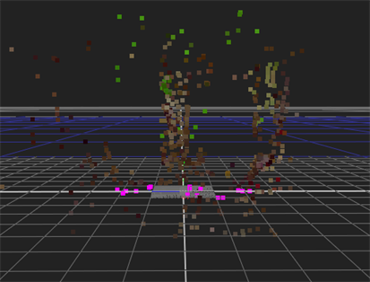
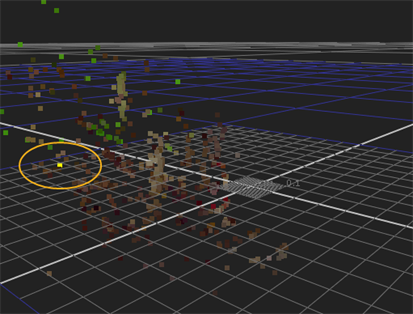
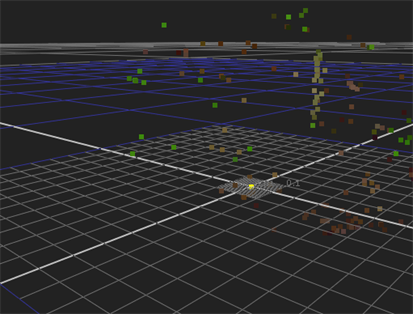

A solved camera has no notion of where the ground plane is in the scene, which can produce an unexpected offset and angle relative to where you'd expect the ground to be in 3D space.
Setting the ground plane or set of axes is designed to provide CameraTracker with a sensible frame of reference. While doing so is not strictly necessary, it can simplify working in the 3D environment.
Before placing the ground plane, scan through your sequence to find a frame with good track and solve data in an area that you know to be at ground level.
| 1. | Hover over likely points to display the track and solve data, typically points with RMS error less than 1. |
| 2. | Hold Shift and select your chosen points, from multiple frames if necessary. |
| 3. | Switch between the 2D and 3D Viewers to confirm the position of the selected points. |
|
|
|
| Ground plane points selected in the 2D Viewer. | The same points viewed in the 3D Viewer. |
| 4. | Switch back to the 2D Viewer and right-click a selected point to display the track options menu. |
| 5. | Select ground plane > set to selected to orient the camera in relation to the selected points. |
Points designated as the ground plane are highlighted in magenta and the camera is reoriented in relation to the new 'ground'.
|
|
 |
| Camera orientation before the ground plane shift. | Camera orientation after the ground plane shift. |
In some situations, you may not have a clearly defined ground plane to reference. Using CameraTracker, you can set the X, Y, and Z axes separately instead of grouping them on the ground plane.
| 1. | Select two or more points that you know to be on the required axis using the 3D point cloud to assist you. |
| 2. | Right-click a point and select ground plane > set X, Y, or Z as required. |
Points designated as an axis are highlighted in yellow and the camera is reoriented in relation to the new axis.
Defining the origin within a layer can assist you when placing objects in your composition - if you know where 0, 0, 0 is located, you can easily place objects precisely where you want them on any axis.
| 1. | Select a single track as an origin point from your solve data. |
| 2. | Right-click the point and select ground plane > set origin. |
The point designated as the origin is highlighted in yellow and the point cloud is translated in relation to the new origin.
|
 |
 |
| Point before the origin shift. |
Point after the origin shift. |
|
|